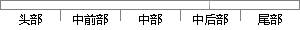

因此在离线定位算法的处理的基础上，我们提出了数据在线的处理流程。
片段位置图

相似结果|
相似片段 1：工作量，提高定位精度做了大量的研究和努力，但是还有一些值得我们去改进和提高的方面，本文针对目前存在的室内定位算法某些方面的不足，做出了适当的改进，主要包括在离线阶段对空缺数据的处理上，我们提出用随机填充和
|
※ 片段修改建议 ※
近似词参考：- 处理：处置 处置惩罚
- 我们：咱们
- 处理：处置 处置惩罚
系统自动生成语句：因此在离线定位算法的处置的基础上，咱们提出了数据在线的处置流程。
注：本片段修改建议为系统自动生成，仅供参考。